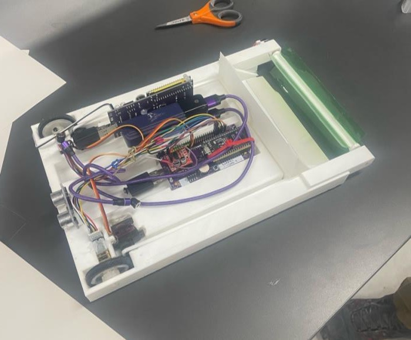
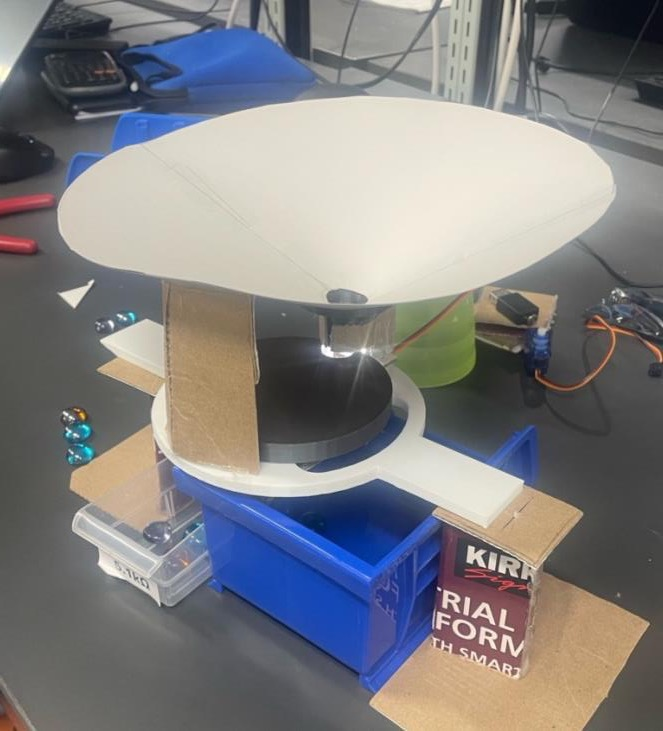
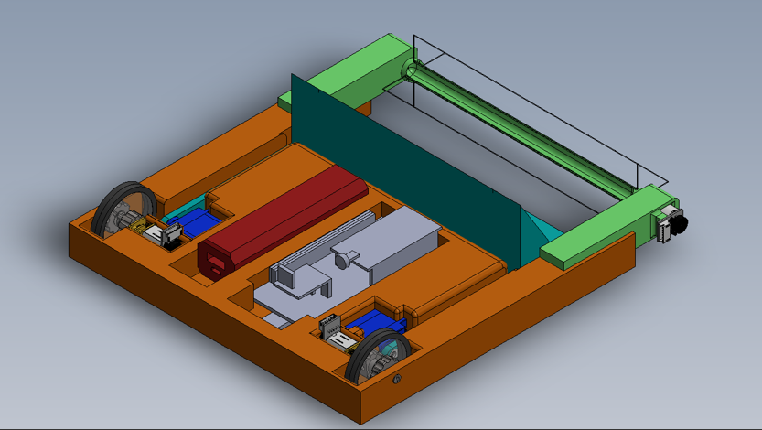
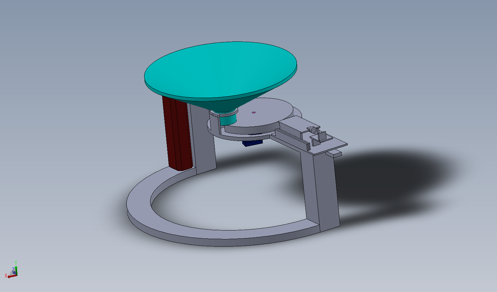
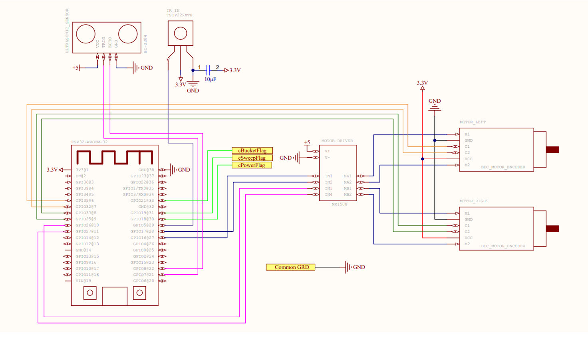

MSE 2202 · Introduction to Mechatronic Design
Autonomous Scavenger Robot
A multidisciplinary robot that navigated an arena, collected coloured objects, returned them to a base station, and classified and sorted them—all within a 120-second mission.
Verified resultDemonstrated autonomous motion, green-object collection, return-to-base behavior, and colour-directed sorting; sustained throughput remained limited by a funnel jam.
- Context
- Academic team project
- Team
- Four students
- Duration
- January-March 2025
- Tools
- C++, ESP32, SolidWorks, TCS34725, IR, ultrasonic
Collect coloured objects and sort them at a base station within a 120-second autonomous mission.
An ESP32 robot with a two-wheel drivetrain, ultrasonic and IR sensing, a rotating-brush intake, a servo bucket, and a separate colour-sorting station.
The system demonstrated driving, collection, return-to-base behavior, and green-object sorting. A funnel jam prevented reliable continuous sorting.
Robot and sorting station
The robot collected objects with a front brush and bucket. At the base, a colour sensor classified each object and a servo-driven rotating gate directed it to the correct output.


Three parts of the mission
The drivetrain moved between the arena and base, the intake collected objects while driving, and the station classified and sorted the delivered objects.
Tests and limitations
What was demonstrated
- Autonomous motion and timed outbound/return legs
- Collection of a green object and delivery to the station
- Colour classification under bright, dim, and shadowed conditions
- Smooth servo movement to the selected sorting output
What did not work reliably
Objects could jam in the funnel, so the system did not sustain continuous sorting. The next revision needs a guided single-file feed, along with improved power distribution and chassis weight balance.
Optional technical evidence



This was a collaborative four-person academic project covering embedded software, electrical integration, CAD, fabrication, testing, and final assembly.
View the team repository